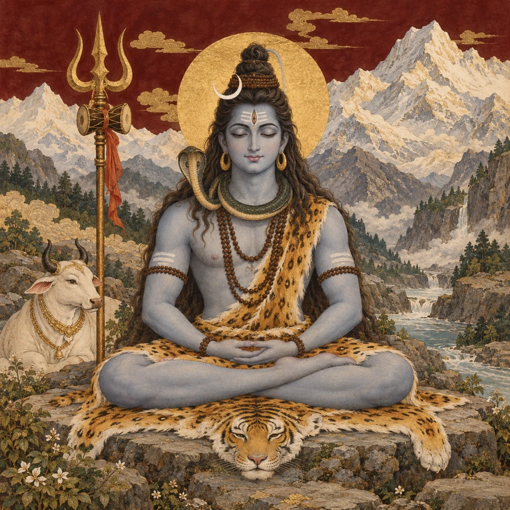
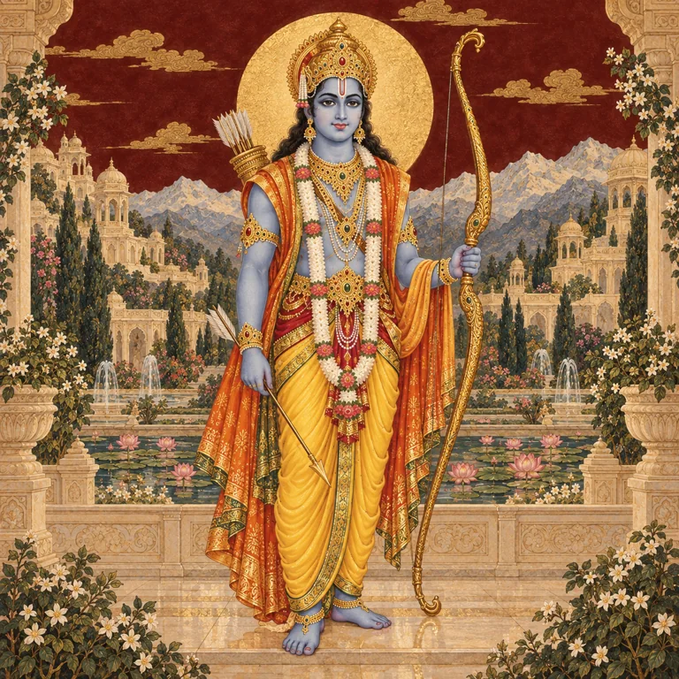
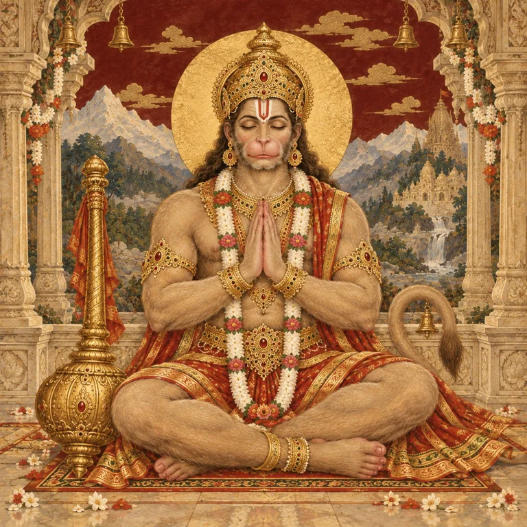
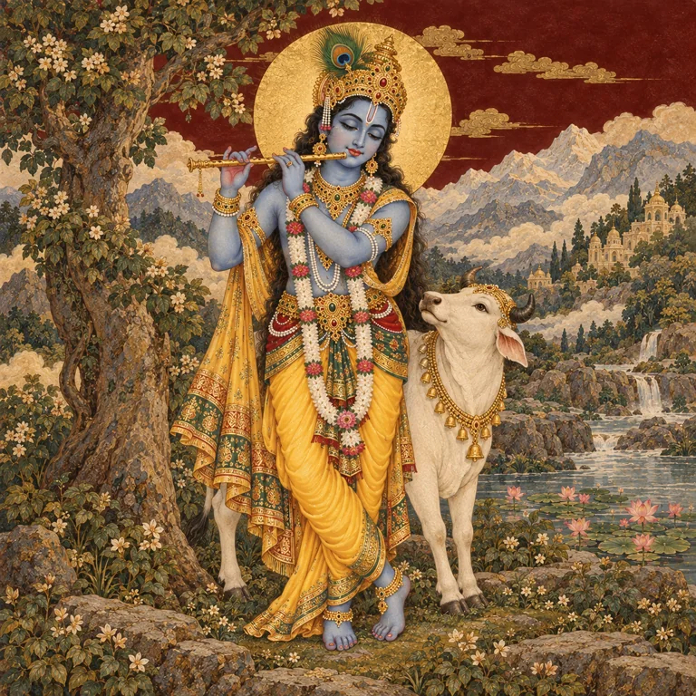
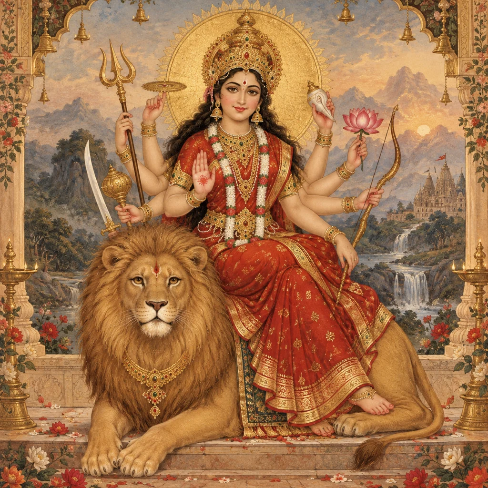
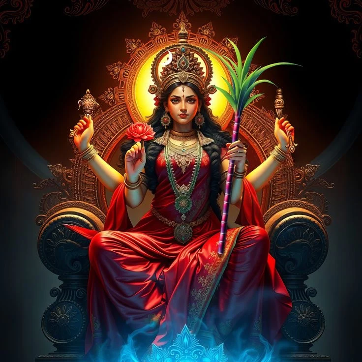

FROM SACRED TEXTS TO SHARED STORIESAI-GENERATED ILLUSTRATION
01 / CHOOSE YOUR DOORWAY
Follow a story. Discover its world.
Read an illustrated story or explore a short introduction. Find an episode by figure, scripture or theme.
7 stories & previews

AI-GENERATED ILLUSTRATION
SHIVA / COMPASSION
Shiva and the ocean’s poison
When the ocean yields a terrible poison, Shiva acts to protect the worlds.
Read the preview+
As devas and asuras churn the ocean, their search for nectar brings an unexpected danger. Shiva receives the poison, becoming known as Nilakantha, the blue-throated one. This preview follows the ocean-churning narrative in the Kedara Khanda.

AI-GENERATED ILLUSTRATION
RAMA / DHARMA
Rama leaves Ayodhya
A royal coronation gives way to exile, and a family must face the meaning of duty.
Read the preview+
On the eve of Rama’s coronation, Kaikeyi asks Dasharatha to honour his promised boons: Bharata’s coronation and Rama’s exile. Rama accepts the forest journey; Sita and Lakshmana accompany him. Their departure begins a new chapter far from the palace.

AI-GENERATED ILLUSTRATION
HANUMAN / COURAGE
Hanuman’s leap to Lanka
Across the ocean lies the next step in the search for Sita.
Read the preview+
With Sita still missing, Hanuman undertakes the ocean crossing to Lanka. The journey tests his strength, judgment and resolve before he reaches the city and continues his search. It is one of the central episodes of the Sundara Kanda.

AI-GENERATED ILLUSTRATION
KRISHNA / PROTECTION
Krishna lifts Govardhana
A mountain becomes a shelter for the people and cattle of Vraja.
Read the preview+
After the people of Vraja offer worship to Govardhana, Indra sends fierce rains. Krishna raises the hill and offers shelter beneath it. The account places the community’s trust and Krishna’s protection at the heart of the episode.

AI-GENERATED ILLUSTRATION
DEVI / COURAGE
Devi and Mahishasura
The gods’ combined radiance takes divine form in the struggle against Mahishasura.
Read the preview+
When Mahishasura overcomes the gods, their radiance comes together as Devi. Armed with the gifts of the gods, she confronts the asura and his forces. This episode belongs to the Devi Mahatmya within the Markandeya Purana.

DEVOTIONAL ART
DEVI / PROTECTION
Lalita and Bhandasura
Enter the sacred narrative of Lalita Tripurasundari and her divine army.
A king’s perseverance brings a heavenly river to the earth.
Read the preview+
Bhagiratha undertakes austerities to bring the Ganga down for his ancestors. Shiva receives the river’s descent, and Bhagiratha leads her onward. The Ramayana tells this ancestral story during Rama’s journey with Vishvamitra.
A different doorway awaits.
No previews match this combination. Try another search or reset the filters.